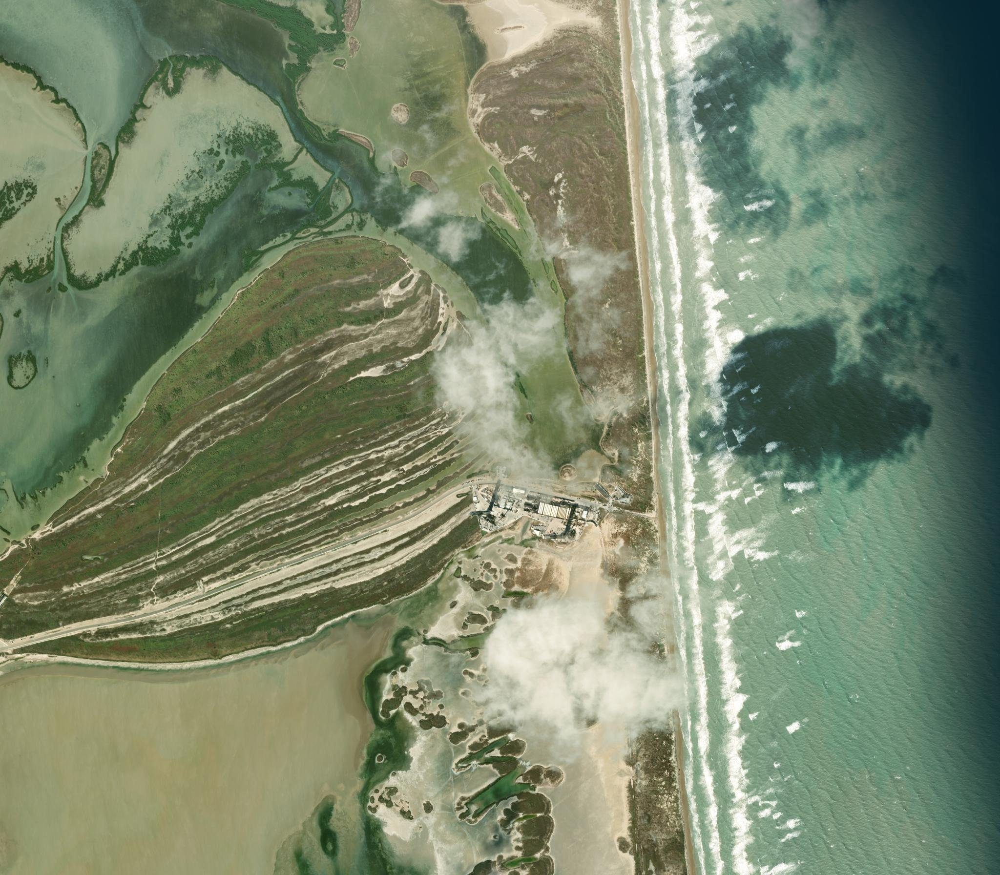
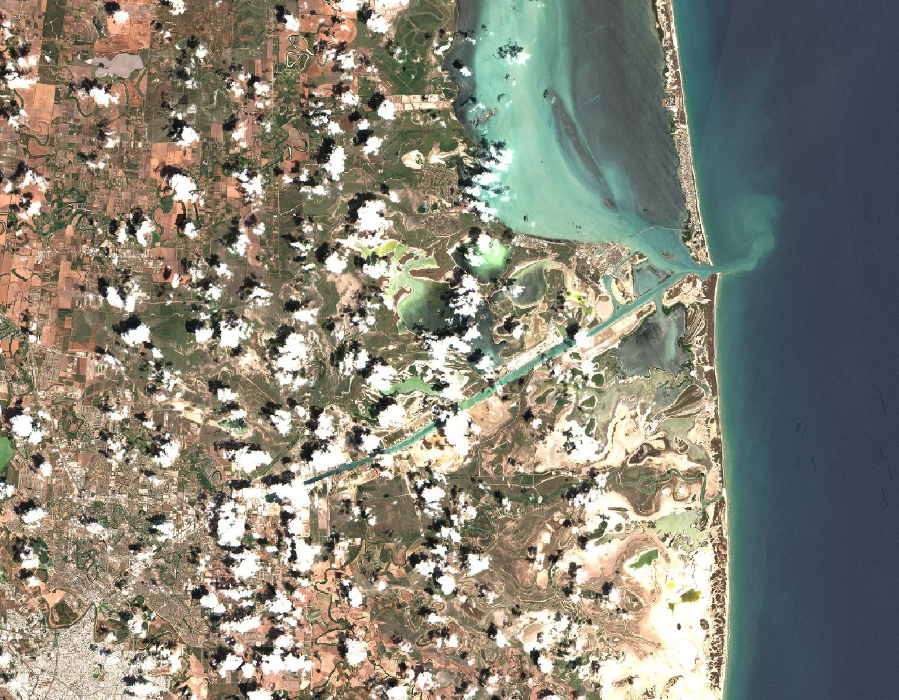
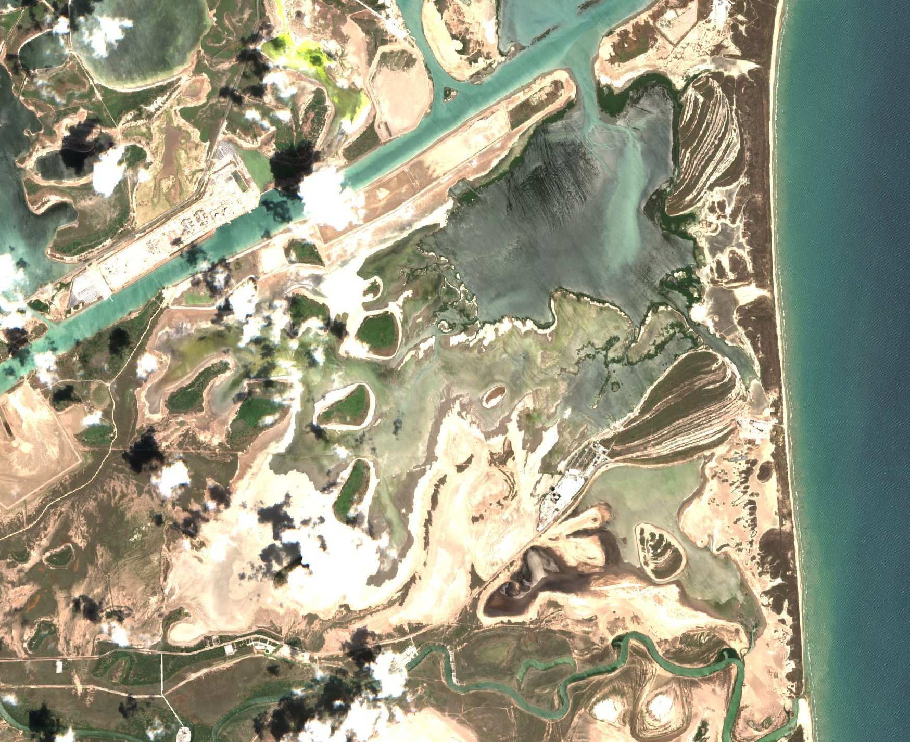

What you see
The working game draws one red dash. The water side follows the coast. The back side sits about 8 km inland where the land is continuous, and it follows the bay where the water cuts in. The sand inside stays sand.
The word on the line is limit. The Land column counts plots. It does not say 69 acres. The range lamp still says Range open or Range closed. There is no second dash and no highway.
Starfactory sits inland. Mega Bay sits between the factory and the pad. The Orbital Pad sits nearest the coast. A rollout from the bay to the pad follows the yard road between those doors.
The two lines
The live map has one line. The drawings under this heading are the earlier study of a 69 acre beach and a pale next buy. They are not the line in index.html. The reference photos and outlines below stay as the study of the coast.
Reference images
These photos are references. They are not the map, and they do not go in the game. The outlines below are traced from them.



Other references
- SRTM elevation, about 30 m squares, read on 15 October 2026. The pad is 2 m. Brownsville is about 5 to 15 m. Eighty kilometers inland is about 16 m. Sample points on the Sierra Madre Oriental, about 230 km southwest, are about 560 m.
- Boca Chica (Texas). The peninsula runs east from Brownsville. The ship channel is on the north, the Rio Grande on the south, the Gulf on the east. Highway 4 is the road to the beach.
- Boca Chica Boulevard in OpenStreetMap, read on 15 October 2026. That line is the highway in the outlines. It was checked against the September road.
- Western Gulf coastal grasslands, and the South Texas sand sheet. This coast is prairie, tidal marsh, and mesquite scrub. Live oak sits farther up the coast. Dunes of about 15 m are in Kenedy County, well north of here.
Analysis
The November frame is the sharp beach. The surf is a near-straight edge. The launch buildings sit on the dune just inland of that edge. West of the buildings, pale and dark stripes fan across the sand. Those are dune ridges a few meters tall. Cloud hides the lagoon and most of the road, so those lines come from the September frames. The owned water edge in the drawings above uses this surf.
The wide September frame is the coast outline. The Gulf is the dark water on the east. Laguna Madre is the pale water behind the barrier island, north of the pass. A straight canal, the Brownsville ship channel, runs from the port to the jetties and meets the Gulf there. Farms cover the inland plain. One road leaves the city, bends northeast, and ends on the sand. The plain has no ridge and no forest canopy. The height samples agree: the ground stays under about 20 m until the Sierra, far off this sheet.
The closer September frame is the beach outline. The channel and the two jetties are the straight cut in the north. A bay of open water sits between the channel and the dune. Pale flats and the dune-ridge stripes lie between that bay and the Gulf. Highway 4 is the thin line that arrives at the beach beside the pad. The green meander on the south edge is the Rio Grande. The dark speck on the sand is scrub, not a wood.
Outlines
These lines are traced from the three photos. The beach is the sand line from the wide September frame, and it matches the November surf beside the pad. Laguna Madre is the outer edge of that lagoon, with the islands left out. The ship channel is the canal center, extended to the beach at the jetties. The bay sits between that channel and the dune. Highway 4 is the road above. East is to the right.
The closer sheet is the same study. It uses that shore, channel, bay, and road, and adds the river from the closer September frame. The red dash on the sheet is a 69 acre beach, and the pale dash is an old next buy. Neither dash is the live line. The dune ridges stay as the sand between the bay and the shore.
69 acres
The 2014 licensed site was 68.9 acres, shown here as 69. A square of that size is about 530 m on a side. The papers split it into a beach parcel and a control parcel about 2 miles inland. The live line does not draw that square.
A Falcon 1 hall, a bay, and a pad together cover a couple of acres. A Mega Bay at Starbase is about 38 m by 54 m. Starfactory’s floor is about 23 acres. The halls in the game are larger than those buildings so the later roads have room. Their readable pictures wait for 0.12.0-picture.
| Ground | Acres | Against the 69 acre tract |
|---|---|---|
| Falcon 1 hall, bay, and pad together | about 2 | a few marks inside the line |
| One Mega Bay, 38 m by 54 m | 0.5 | still a speck |
| Starfactory floor, about 1 million sq ft | about 23 | about a third of this tract |
| First tract, 2014 licensed site | 69 | the license, not the line in the game |
How the line is drawn
- One closed shape. The water side is the gulf shore from about lat 25.80 until the shore jumps inland at the pass. The back side is about 8 km inland, and it stops at the first water so the stroke stays on sand.
- The stroke is
rgba(176, 32, 24, 1), dash 8 and 6, about 2 px wide. The word limit sits on the part of the stroke that is on screen. - No fill. No pale next dash. No grey plot dash. The Land column counts plots.
The real pad sits in the dunes at the end of the highway, against Boca Chica Beach. The tract reaches that waterline. You do not own the Gulf, and the line does not cross it. In Texas the wet beach stays a public beach. A fire can close it. The line on the map is the shore for that stretch, then it turns inland across the dune.
Site and Work use the Gulf shore from geo-land.js. The highway, the traced lagoon, the channel, and the river stay off the map. The three buildings sit inside the line. Starfactory is inland. The Orbital Pad is nearest the shore.
When the line moves
Later rows add rules on this same coast line. They do not replace it with a 69 acre square or a pale next dash. Buildings do not grow a private border.
The acres below are the later land story. They are not stacked shapes on the sand, and they are not the live column.
| Tract | Acres | Why it exists |
|---|---|---|
| 2014 license | 69 | Not the live line. The live line is the coast. |
| Yard, for sale | about 200 | Empty ground around the pad, then the first houses. The range lamp uses the clear distance. Beds cut bay days. |
| The 2025 city strip | about 930 | Room for a test stand off the factory, and for a tank farm whose acres set how much propellant you can hold. |
| The 2026 annex | toward 8,000 | A second pad, plus wetland you own and cannot build on. The second pad waits until that wetland is inside the tract. |
Those rules are later rows on design-docs/program-roadmap-design.html. This slice draws the coast line. The column counts plots.
Left out of this slice
- No acre buy. Each building is its own plot. The column counts plots. There is no pale dash.
- Readable building pictures wait for
0.12.0-picture. The build, the rolls, the raise onto the mount, and the static fire on the map wait for0.13.0-motion. The static fire is still a modal. - No village, no test stand, no tank-farm acre rule, and no second pad.
- No structure lab. That stays
0.5.0-structure. - No forest and no mountain range on the Site view. Those are not on this coast.
- A clinic and a school wait until people already sleep on the tract. They are a small retention bonus, not this border.